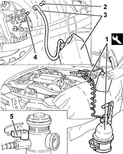

3330A14 HYDRAULIC BRAKING SYSTEM - Bleed air
- Path
- Procedures > 33 BRAKING SYSTEM > 3330 HYDRAULIC BRAKING SYSTEM > 3330A hydraulic brake system tests and checks > 3330A14 HYDRAULIC BRAKING SYSTEM - Bleed air
- Kind
- repair procedure (removal / refitting; the operation number is the code)
- Applies to
- all engines; all production periods
- Interactive page
- https://sloeber94.github.io/elrnDB-a156/en/#/3238057
Applies to: all engines; all production periods
Position the vehicle on the ramp.
1. Connect the tool to the brake-clutch fluid reservoir.
 | Name | Country |
|---|---|---|
1 | Brake/clutch bleeding equipment | 1.806.097.001 |
Raise the vehicle.
2. Remove the protective cap from the valve on the brake caliper.
3. Connect the collection system (pipe and reservoir) to the bleed valve on the brake caliper.
4. Open the bleed valve on the brake caliper.
5. Slowly open the fluid reservoir cock.
Wait until all the air contained in the hydraulic brake system has come out.
Close the brake caliper bleed valve.
Repeat the above operations for the other brake calipers.

Applies to: all engines; all production periods
Remove the collection system.
Remove the equipment.
| Name | Country |
|---|---|---|
- | Brake/clutch bleeding equipment | 1.806.097.001 |
Check that the level in the brake-clutch fluid reservoir is correct.
Remove the car from the ramp.
Topics that link to this page (23)
- 3330A hydraulic brake system tests and checks
- F10 EXCESSIVE BRAKE PEDAL FREE PLAY
- F11 BRAKE PEDAL TOO SOFT'
- F21 ABS NOT WORKING / (ONE WHEEL LOCKED)
- 0010T65 hydraulic brake system bleed air
- 3310A30 FRONT BRAKE CALIPER (one) - R.R.
- 3310B36 rear brake calliper - r r
- 3330C37 pipe from brake fluid reservoir to master cylinder (pump) - r r for rhd versions
- 3330C38 FLEXIBLE PIPE - FRONT section - from brake fluid RESERVOIR to (pump) - MASTER CYLINDER R.R. for right hand drive versions
- 3330C39 FLEXIBLE PIPE - REAR section - from brake fluid RESERVOIR to (pump) - MASTER CYLINDER R.R. on right hand drive versions
- 3330D05 brake servo/brake pump assembly - r r for right hand drive versions
- 3330D10 brake servo - r+r - includes separation from master cylinder (pump)
- 3330D11 brake servo - r r including seperation from master cylinder - facia lining removed for rhd version
- 3330E10 FLEXIBLE PIPE (one), left or right, to front brake calipers - R.R .
- 3330e30 FLEXIBLE PIPE (one), left or right, to rear brake calipers - R.R.
- 3340A12 A'B.S. system. - electronic and hydraulic CONTROL UNIT R.R.
- 3340A13 abs central mount - r r
- 3340A20 abs electronic control unit - r+r
- 3340b52 pump/central obs pipe - r r
- 3340B53 rigid pipe (one) from master cylinder (pump) to abs hydraulic control unit - r r for rhd versions
- 3340B55 central brake pipe to lh - r r
- 3340B56 RIGID PIPE from hydraulic CONTROL UNIT to RIGHT FRONT BRAKE - R.R.
- 3340B62 rear connection central pipe - r r